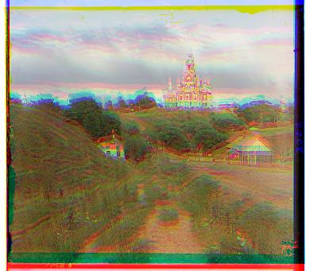

Reemerging the Russian Empire
CS194-26 Proj #1 : Colorizing the Prokudin-Gorskii photo collection, Ken Guan
Can you produce colored photography with only a black-and-white camera? As impossible as it sounds, Sergei Mikhailovich Prokudin-Gorskii (1863-1944), a man of genius, was able to produced thousands of "colored" pictures of the Russian empire by recording his photos in three different exposures: blue, green and red. With the technologies today, we can digitally combine the three exposures to gain a view of the old Russian empire. Below are two examples of Prokudin-Gorskii's photos, each with the three exposures stacked together.
Left: General view of the [Nikolaevskii] Cathedral from southwest. Mozhaisk
Right: Emir of Bukhara. Bukhara
Unfortunately, recreating the photos weren't as easy as one would imagine. Turns out the exposures weren't perfectly aligned due to technical difficulties at the time of capture. Take the photo of the Cathedral as an example; simply stacking the three exposures would give an image of wild color misalignment:

Having the raw pixels, however, we can align the three channels by rolling them to a desired direction. We optimize the alignment between two channels by either minimizing the SSD or maximizing the NCC, which are given as follows (Let the two channels be A, B respectively):
Given the small image size, we brute-force search all possible alignment shifts within a small window (15 pixels each direction) to find the best shift. It turns out that these two metrics yield identical images on most inputs. The resulting image is much better than the original stacked image:
The brute-force method inevitably fails on the larger images because the "small window" we used earlier proved to be too small, while using a larger window is too expensive to search. Trying the 15-pixel shifting window on the Emir image gives the following:
Unsatisfactory. In order to realize larger channel shifts without searching too big a window, we employ the image pyramid approach, where we measure alignment shifts on different levels of shrinked image, making larger shifts on the smaller sizes while fine-tuning on the bigger. Using 3 levels of halving accuracy and the same 15-pixel shifting window, we are able to make a maximum of (8 + 4 + 2 + 1) * 15 = 225 pixels of shifting each direction, with only 4 times the cost.
The result of the image pyramid algorithm on the Emir image is the following:
Great! We can see his face much more clearly.
All of the photos in the collection comes with some white borders followed by some black borders. We neglected the borders in the alignment process by only comparing the inner 2/3 of the image (each direction), but it becomes unreasonable to crop out only the inner 2/3 of the image just to get rid of the borders. Instead, given the pattern of the borders, we use a simple algorithm.
First, we removes all rows and columns near each edge that has a high average value (>0.9) in at least one of the three channels. This gets rid of the white borders. Next, we remove all rows and columns near each edge of the remaining image that has a low average value (<0.2) in at least one of the three channels. This method minimizes cropping on the real image and crops out the edges on most images.
To combat the case where the border between the black and white portions are not exactly horizontal/vertical, we crop an additional constant number of pixels per side between the two processes so the black borders are not "shielded" by the sloped zone, where the average value sits in the middle of the two thresholds.
This method works well on most images where the borders are clean. There were a few cases where the borders are contaminated with additional markings or unexplained noise. An edge-detection approach could potentially handle these cases better.
A before -> after comparison on some images:

Finally, we also see some unpleasant colored strips around the cropped images. Some of these are produced by our shifting process (we used np.roll which wraps around) while others are due to noise in the original images. We only remove the ones produced by shifting by further cropping each image by the amount of shifting applied. The result is like the following:
(All shifts are aligned to the green channel in (x, y) format, direction defined as in np.roll)
SHIFT: r: 1, 7; b: -2, -5
SHIFT: r: 1, 6; b: -2, 3
SHIFT: r: 1, 4; b: -3, -3
SHIFT: r: 2, 64; b: -2, -34
SHIFT: r: 18, 58; b: -24, -48
SHIFT: r: -2, 64; b: -16, -58
SHIFT: r: 6, 48; b: -18, -42
SHIFT: r: 4, 62; b: -8, -56
SHIFT: r: 4, 96; b: -10, -82
SHIFT: r: 10, 58; b: -26, -52
SHIFT: r: 8, 98; b: -30, -78
SHIFT: r: -2, 58; b: -14, -52
SHIFT: r: 26, 44; b: -6, -42
SHIFT: r: -10, 52; b: 0, -54
SHIFT: r: 2, 48; b: -6, -32
SHIFT: r: 6, 80; b: -6, -8
SHIFT: r: -16, 106; b: 10, -34
SHIFT: r: 26, 90; b: -28, -20